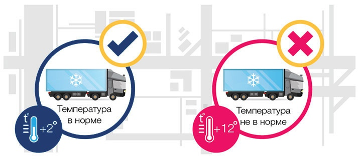

При перевозке скоропортящихся продуктов, медикаментов, растений с помощью рефрижераторных контейнеров и рефрижераторов — транспортных средств, оборудованных холодильными установками — очень важны поддержание оптимального температурного режима и мониторинг рефрижераторных перевозок, в том числе контроль температуры рефрижератора в течение всего рейса, так как это необходимо для сохранения качеств скоропорта и соблюдения законов. Решить эту задачу помогает спутниковое отслеживание перевозок скоропортящихся продуктов с использованием приборов, гарантирующих постоянный контроль температуры рефрижератора.
В более широком смысле отслеживание перевозок скоропортящихся продуктов и контроль температуры рефрижератора относится к сбору данных о грузоперевозке. Перевозки скоропорта предполагают сбор данных и полный учет операций грузоперевозок, которые нужны для анализа общей картины грузоперевозок, необходимого для создания прозрачных цепочек поставок. Для предсказуемого перемещения товаров нужно упростить, стандартизировать и гармонизировать все процессы, в том числе и информационные потоки, посредством внедрения смарт-технологий, например, спутниковой навигации в транспортной логистике, технологии которой обеспечивают мониторинг рефрижераторных перевозок, во все логистические процедуры и создания на их основе эффективных решений для повышения уровня взаимосвязанности не только внутри компаний, но и во всей сети партнеров – от различных отраслевых сегментов и направлений предпринимательской деятельности до государственных органов.
Налаженный мониторинг рефрижераторных перевозок продуктов питания, растений, медикаментов или другого скоропорта дает возможность отслеживать изменения в режиме транспортировки и своевременно его корректировать, а также осуществлять контроль температуры рефрижератора, соблюдая условия перевозки. Это минимизирует риски, снижая вероятность порчи перевозимого скоропорта, в документах которого кроме информации, описывающей состояние перевозимых грузов, указывают сроки возможной транспортировки с учетом условий перевозки на конкретных видах транспорта.
Чтобы обеспечить постоянный контроль температуры рефрижератора, используются бортовые устройства, постоянно фиксирующие и отображающие любые изменения условий транспортировки продукции и посредством спутниковых сигналов передающие данные о температуре, то есть гарантирующие отслеживание перевозок скоропортящихся продуктов.
Необходимый температурный режим транспортировки поддерживается посредством следующих факторов:
Один из программных продуктов, обеспечивающих постоянный контроль температуры рефрижератора — прибор IQfreeze. Это компактное устройство, которое позволяет интегрировать холодовую установку в систему, осуществляющую спутниковый мониторинг рефрижераторных перевозок, и использовать возможности этой системы для отслеживания температурного режима в холодильной камере. Работает IQfreeze по следующей схеме:

Сведения о температурном режиме в рефрижераторной установке поступают к бортовому терминалу системы, осуществляющей спутниковый мониторинг рефрижераторных перевозок (прибор совместим с контроллерами «АвтоГРАФ», «Сигнал», «ГалилеоСкай»; интегрирован в системы мониторинга СКАУТ, ANTOR MonitorMaster). Данные, обработанные терминалом системы, реализующей спутниковый мониторинг рефрижераторных перевозок, передаются на сервер и поступают в программу, с которой работает диспетчер, и/или в мобильное приложение водителя.
Диспетчерское программное обеспечение (карта с навигационной информацией) дополняется вкладкой со сведениями о работе холодильных установок рефрижераторов, оснащённых модулем IQfreeze. Это обеспечивает удаленный контроль температуры диспетчером.
Также при спутниковом мониторинге перевозки скоропорта на экран выводятся и другие параметры, такие как состояние холодильной установки.
Преимуществом диспетчерского приложения для работы с IQfreeze будет и настраиваемая система оповещений. Информация о выходе любого из параметров за установленные пределы выводится на монитор, что гарантирует привлечение внимания ответственного лица к нарушению температурного режима. Кроме того, возможна рассылка оповещений с использованием различных каналов (SMS, e-mail).
При установке устройства IQfreeze возможна передача данных с него не только на пульт диспетчера, но и на мобильный телефон водителя рефрижератора. При нарушении установленного температурного режима водитель получает оповещение и получает возможность для оперативного принятия мер. Таким образом, использование мобильного приложения уменьшает риски: даже при отсутствии связи с диспетчером водитель может вовремя заметить и устранить превышение температуры, которое может привести к порче груза.
Мониторинг при транспортировке скоропортящихся грузов в рефконтейнерах может обеспечиваться также посредством применения технологии смарт-контейнеров, в случае которой датчики регистрации температуры входят в систему датчиков, собирающих полную информацию о контейнере (местоположение перевозимых грузов, состояние окружающей среды, попытки взлома, общее время в пути и все точки маршрута, обновление ожидаемого времени прибытия, изменения температуры или влажности, о выгрузке контейнера, выверка на складе, подтверждение поступления разгруженного контейнера на склад).
Статьей 19 Закона "О качестве и безопасности пищевых продуктов" установлены требования к обеспечению качества и безопасности пищевых продуктов, материалов и изделий при их хранении и перевозках.
Индивидуальные предприниматели и юридические лица, осуществляющие хранение и перевозки скоропорта продуктов, материалов и изделий, обязаны соблюдать требования, установленные в соответствии с законодательством Российской Федерации, к условиям хранения и перевозок пищевых продуктов, материалов и изделий и подтверждать соблюдение таких требований соответствующими записями в товаросопроводительных документах. Приборы спутникового мониторинга транспортного средства и груза необходимы, чтобы обеспечить отслеживание перевозок скоропортящихся продуктов на предмет соблюдения требований к ним.
Для перевозок пищевых продуктов должны использоваться специально предназначенные или специально оборудованные для таких целей транспортные средства.
В случае, если при перевозке пищевых продуктов нарушен контроль температуры рефрижератора и это привело к утрате скоропортом качества и приобретению им опасных свойств, ИП и юрлица-перевозчики обязаны информировать об этом владельцев и получателей пищевых продуктов. Такой скоропорт не подлежит реализации, направляетя на экспертизу, в соответствии с результатами которой он утилизируется или уничтожается.
Транспортные средства при перевозках скоропортящихся продуктов должны удовлетворять нормам, установленным Соглашением о международных перевозках скоропортящихся пищевых продуктов и о специальных транспортных средствах, предназначенных для этих перевозок (СПС)
Порядок выдачи свидетельств о соответствии нормам, установленным Соглашением о международных перевозках скоропортящихся пищевых продуктов и о специальных транспортных средствах, предназначенных для этих перевозок, подписанным в г.Женеве 1 сентября 1970 г., для изотермических транспортных средств, транспортных средств-ледников, транспортных средств-рефрижераторов или отапливаемых транспортных средств утвержден приказом Минтранса России от 21.08.2020 N 318.
Порядок назначения экспертов для контроля изотермических свойств находящихся в эксплуатации изотермических транспортных средств и для проверки эффективности термического оборудования каждого находящегося в эксплуатации транспортного средства-ледника, транспортного средства-рефрижератора или отапливаемого транспортного средства утвержден приказом Минтранса России от 21.08.2020 N 319.
Мониторинг температурных условий при перевозках медикаментов необходим для соблюдения Правил надлежащей практики хранения и перевозки лекарственных препаратов для медицинского применения, которые устанавливают требования к условиям хранения и перевозки лекарственных препаратов, необходимым для обеспечения качества, безопасности и эффективности лекарственных препаратов, а также минимизации риска проникновения фальсифицированных, недоброкачественных, контрафактных лекарственных препаратов в гражданский оборот, и предполагают спутниковый мониторинг рефрижераторных перевозок медикаментов.
Источники:
1)Контроль рефрижераторов IQfreeze
2) ПЕРСПЕКТИВЫ ПЕРЕВОЗОК СКОРОПОРТЯЩИХСЯ ГРУЗОВ В РОССИИ,
3) БЕЛАЯ КНИГА "УМНЫХ" КОНТЕЙНЕРОВ, Емельянович Ирина — Наука и инновации, 2020
4) Законодательная база перевозок продуктов
5) Законодательная база перевозок медикаментов